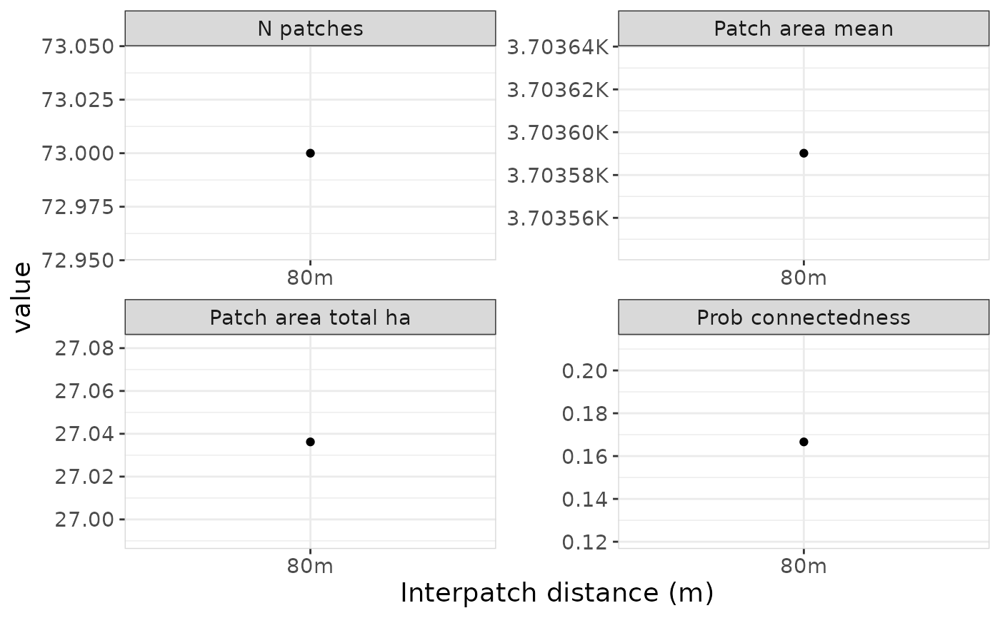
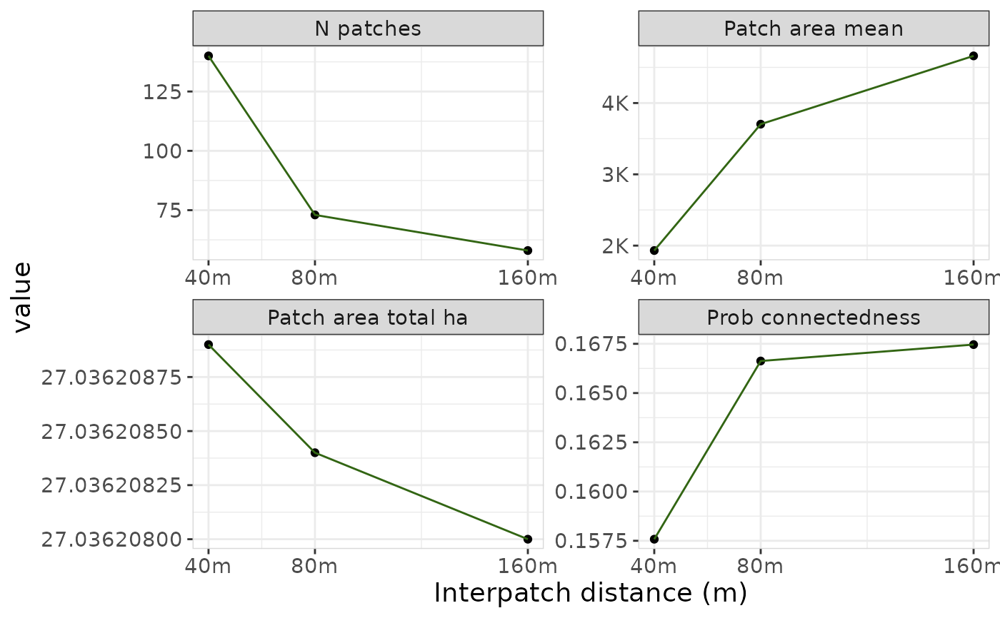
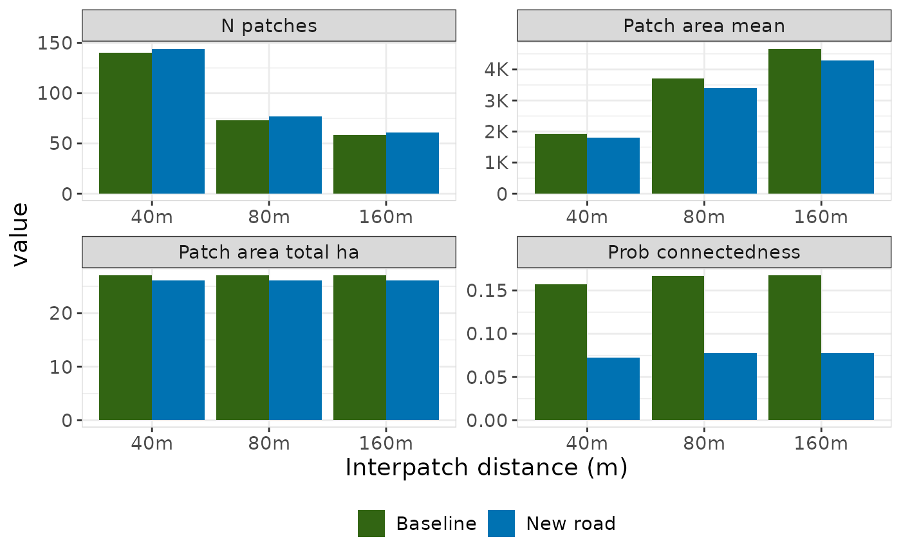

Plot connectivity metrics across interpatch distances
Source:R/plots-summaries.R
plot_connectivity.RdDraws how the connectivity metrics change with the interpatch distance, a panel per metric, each on its own scale.
Usage
plot_connectivity(x, ...)
# Default S3 method
plot_connectivity(x, ...)
# S3 method for class 'compare_connectivity'
plot_connectivity(x, ...)Arguments
- x
A
connectivityobject, fromhabitat_connectivity()orsummarise_connectivity(), with a row per interpatch distance. Or acompare_connectivityobject, fromcompare_connectivity(),compare_scenarios(),habitat_connectivity_comparison()orhabitat_connectivity_scenarios(), with up to five scenarios. A scenario is labelled by itsscenario_name, or "Scenario" when it has none.- ...
Not used.
Details
Given a connectivity object, it draws a point per distance joined by a
line. A single distance is a single point.
Given a compare_connectivity object, it draws a bar for the baseline and
for each scenario at every interpatch distance, side by side, so you can
see where a scenario departs from the baseline and whether that holds
across distances.
The four metrics are n_patches, prob_connectedness, patch_area_mean
and patch_area_total_ha. effective_mesh_ha is left out because it is
prob_connectedness multiplied by the habitat area, which is the same at
every distance, so its panel would have the same shape.
Values are drawn as they are. In a comparison, prob_connectedness is
measured against the baseline's habitat area, so a scenario that adds
habitat can score above 1, and the plot shows that rather than capping it.
See also
connectivity_display() for a comparison as a table.
Examples
# 10 m cells, as the app uses, keep the example quick
today <- prepare_rasters(
example_habitat(),
example_barrier(),
data_resolution = 10
)
lizard_connectivity <- habitat_connectivity(
habitat = today$habitat_raster,
barrier = today$barrier_raster,
species = "Blue-tongued Lizard",
interpatch_distance = 80,
verbose = FALSE
)
lizard_connectivity
#> # A tibble: 1 × 9
#> species interpatch_distance n_patches effective_mesh_ha prob_connectedness
#> <chr> <dbl> <int> <dbl> <dbl>
#> 1 Blue-tongu… 80 73 4.50 0.167
#> # ℹ 4 more variables: patch_area_mean <dbl>, patch_area_total_ha <dbl>,
#> # data_resolution <chr>, patch_size <list>
plot_connectivity(lizard_connectivity)

# multiple distances
distances <- c(40, 80, 160)
# a row per interpatch distance
lizard_connectivities <- purrr::map(
distances,
function(distance) {
habitat_connectivity(
habitat = today$habitat_raster,
barrier = today$barrier_raster,
species = "Blue-tongued Lizard",
interpatch_distance = distance,
verbose = FALSE
)
}
) |>
purrr::list_rbind()
plot_connectivity(lizard_connectivities)

# a new road through the habitat against the landscape today
new_road <- onto_grid(
example_barrier_scenario(),
today$barrier_raster,
background = 0
)
lizard_road_comparison <- habitat_connectivity_comparison(
habitat_baseline = today$habitat_raster,
barrier_baseline = today$barrier_raster,
species = "Blue-tongued Lizard",
interpatch_distance = distances,
barrier_scenario = new_road,
scenario_name = "New road",
verbose = FALSE
)
lizard_road_comparison
#> # A tibble: 12 × 10
#> scenario_name measure species interpatch_distance n_patches effective_mesh_ha
#> <chr> <chr> <chr> <dbl> <dbl> <dbl>
#> 1 New road baseli… Blue-t… 40 140 4.26
#> 2 New road scenar… Blue-t… 40 144 1.96
#> 3 New road change Blue-t… 40 4 -2.30
#> 4 New road pct_ch… Blue-t… 40 2.86 -54.0
#> 5 New road baseli… Blue-t… 80 73 4.50
#> 6 New road scenar… Blue-t… 80 77 2.09
#> 7 New road change Blue-t… 80 4 -2.41
#> 8 New road pct_ch… Blue-t… 80 5.48 -53.6
#> 9 New road baseli… Blue-t… 160 58 4.53
#> 10 New road scenar… Blue-t… 160 61 2.11
#> 11 New road change Blue-t… 160 3 -2.42
#> 12 New road pct_ch… Blue-t… 160 5.17 -53.5
#> # ℹ 4 more variables: prob_connectedness <dbl>, patch_area_mean <dbl>,
#> # patch_area_total_ha <dbl>, data_resolution <chr>
plot_connectivity(lizard_road_comparison)
